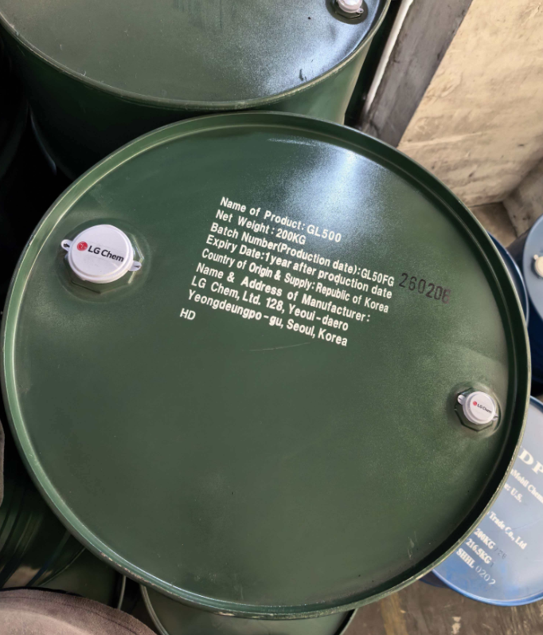
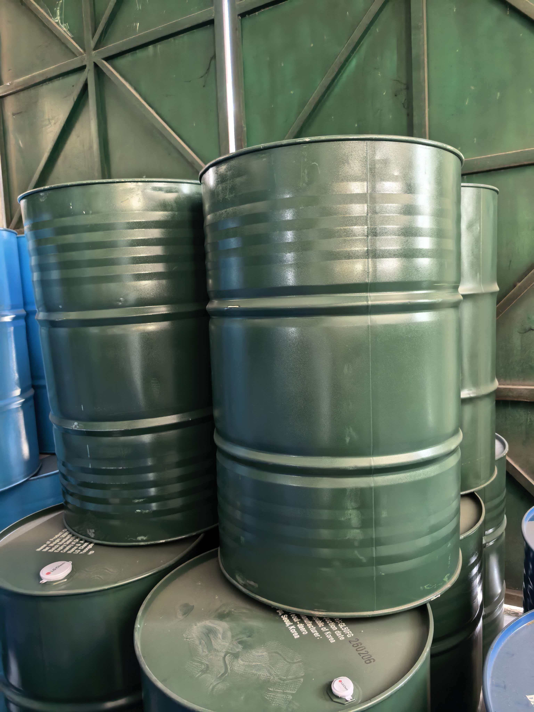

产品介绍
面向更高要求 PVC 配方的 GL-500
GL-500 可作为 GL-300 以上的高阶产品选择，用于客户对加工表现、产品稳定性、环保定位和进口品牌供应有更高要求的应用。
- 韩国 LG Chem 原装产品
- 适合高要求 PVC 软制品与电线电缆应用
- 可按询盘提供 COA、TDS、MSDS 与批次资料
- 具体规格、批号和库存以当前报价为准
LG Chem 环保增塑剂
GL-500 是韩国 LG Chem 的高阶环保增塑剂产品方向，面向对品质稳定、环保资料和长期供应有更高要求的 PVC 客户。

产品介绍
GL-500 可作为 GL-300 以上的高阶产品选择，用于客户对加工表现、产品稳定性、环保定位和进口品牌供应有更高要求的应用。
上海慧罗可协助确认 GL-500 的包装、到货批次、库存与资料需求。询价时请提供数量、用途、目的地和目标市场。
上海仓库实拍
原装桶顶可见产品、净重、韩国原产地与生产信息；实际可用数量以当前询价为准。


应用与选型
GL-500 的最终选型应结合配方、加工条件、目标市场和成品性能要求确认。
适合关注加工稳定、耐久表现和进口品牌供应的高要求电缆配方。
面向片材、薄膜及工业软制品等对稳定性有更高要求的应用。
可按客户用途确认批次、包装及 COA、TDS、MSDS 等资料。
销售联系
请留下数量、用途、目的地和所需资料，我们会尽快回复。